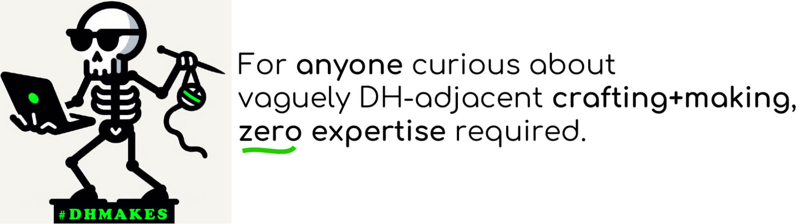
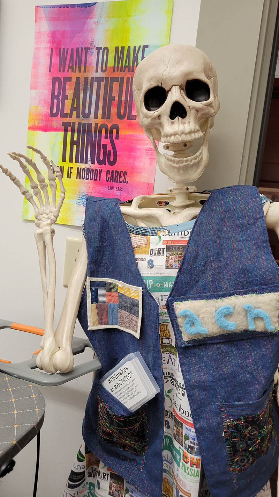
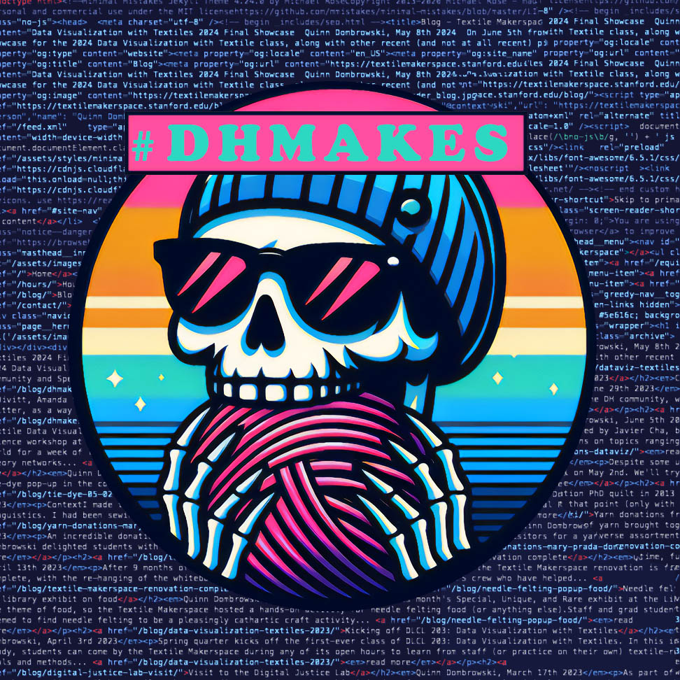

Quinn Dombrowski, September 25th 2024
This post is by Amanda, Claudia, and Quinn-- a few of the many #DHmakes community members, who've described the community in a couple places. We're gathering those descriptions into one post (though a hashtag in use across multiple platforms is defined by its users, so we aren't the authority, and its use will evolve over time!).
-
DH = digital humanities (folks using or building digital tools like websites, code, VR to explore humanities areas like culture, history, art, ethics; folks using those kinds of humanities approaches to critique technology)
-
Makes = craft, making, makerspace types of creative work
We published a peer-reviewed article in the Korean Journal of Digital Humanities,"#DHmakes: Baking Craft into DH Discourse", if you want to know a lot about the community's origins, history, and outputs.
If you want a ✨tl;dr✨ though, here's a FAQ!
Who started this?
We're digital humanities people who incorporate physical making/art into our work (or do it as a hobby and share it online somewhere)!
Who is this for?
#DHmakes is loosely folks in digital humanities/libraries/academia/learning-work who craft/make (including as non-job hobby), open to anyone interested.
What kinds of things get posted?
- "I made/am making a thing!"
- work related to including craft/textile work in making
- works-in-progress, fails, public figuring-out how to do some method/project
- explicitly celebrating, amplifying, encouraging neat craft/make work, whether or not the creators are digital humanities people
- encouraging sharing "this is my hobby, not my job" crafts
- getting started
What kinds of making/crafting?
All of them? We're interested in an expansive definition and especially things that have sometimes gotten left out of how people think of makerspaces/making, such as textile art. Other frequent areas of interest tagged #DHmakes include craft/making work related to:
- history
- culture & pop culture
- zines
- data visualization & embodiment, including personal data
- queer/feminist/critical tech, social justice
- play with historical craft practices
- expansive definitions of making that assert awesomeness of areas like fabric arts, cooking, fashion\
For examples, check out Quinn's Textile Makerspace, Claudia's and Gabby Evergreen's "Pockets of Information", Jacqueline Wernimont's "Visualizing Energy Data or Visceralizing Energy Transitions", and Amanda's Scholars' Lab "expansive makerspace"-tagged posts page.
Why have I been tagged #DHmakes?
Folks RT/repost cool, relevant craft/making work with the tag so others get to admire them too.
Am I "DH enough" to use the hashtag?
The "DH" in #DHmakes is digital humanities. We're guessing the other most active hashtag users agree with us: anyone curious about DH (not necessarily "experienced" or in a "DH job") should participate! Workers, students, hobbyists in areas like gallery/library/archive/museum/learning that are DH or feel adjacent too.
Have you done things beyond using a hashtag?
Yes!
- A collaborative making project as part of a conference session (ACH 2023) plus a blog post explaining the different crafts/crafters included
- A mini-conference (at DH 2024)
- A journal special issue: dh+lib Critical Making Special Issue
- A peer-reviewed journal article: "#DHmakes: Baking Craft into DH Discourse"
- Series of public "intro to x method" talks (#DHmakes Methodz Talks, Fall 2024)
You can follow #DHmakes using a feed of all tagged posts, or a feed of just the #DHmakes posts that include photos.
  